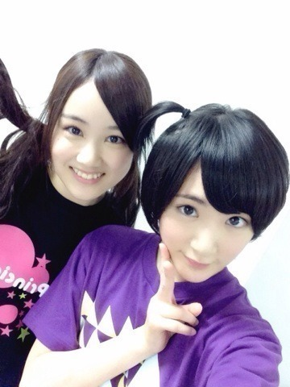

今日も二回公演でしたヽ(・∀・)ノ
私は一番練習していたロザリオという役に挑戦しているのですが、
一度も選ばれず。
今日は二回とも激戦区でどちらも選ばれませんでしたヽ(・∀・)ノ
何が悔しいかって、
技のない才能のない自分！！
その為に努力をしなければいけないのに
それに気づいたのはみんなが二幕をやっている時でした。
のわ〜。
私は苦手だと決めた物に心を開くまでしばーらくかかる人間です。。。
今回のプリンシパルでコメディとかバラエティでも通じる技を身につけようと目標にしたのに自分から苦手だからむりってしてしまっている。
脱却せねば。。
まだ本役になれてないよ〜。。
頑張れ生駒ちゃん。。
ほんと演技にがてね〜

みなみちゃん！！
舞台に立ったみなみちゃんはいつもの1億倍！！
いやっ！！
それ以上輝いているよっヽ(・∀・)ノ
ちなみにこの生駒ちゃんはおジャ魔女どれみのおんぷちゃん結びにしましたっ！
頑張れ自分！
へばなっ！⭐︎